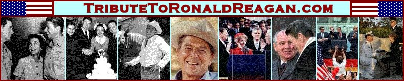

 |
|
HOME
MY TRIBUTE GALLERY QUOTES SPEECHES MEMORIAL LINKS |
Rep. Hastert Remakes, June 8, 2004
Mrs. Reagan, Mr. Vice President, members of Congress, distinguished guests: Ronald Reagan's long journey has finally drawn to a close. It is altogether fitting and proper that he has returned to this Capitol Rotunda, like another great son of Illinois, Abraham Lincoln, so the nation can say goodbye. This Capitol building is, for many, the greatest symbol of democracy and freedom in the world. It brings to mind the ``shining city on a hill'' of which President Reagan so often spoke. It is the right place to honor a man who so faithfully defended our freedom, and so successfully helped extend the blessings of liberty to millions around the world. Mrs. Reagan, thank you for sharing your husband with us - for your steadfast love and for your great faith. We pray for you and for your family in this time of great mourning. But as we mourn, we must also celebrate the life and the vision of one of America's greatest presidents. His story and values are quintessentially American. Born in Tampico, Illinois, and then raised in Dixon, Illinois, he moved west to follow his dreams. He brought with him a Midwestern optimism, and he blended it with a western ``can do'' spirit. In 1980, the year of the ``Reagan Revolution,'' his vision of hope, growth and opportunity was exactly what the American people needed and wanted. His message touched a fundamental chord that is deeply embedded in the American experience. President Reagan dared to dream that America had a special mission. He believed in the essential goodness of the American people, and that we had a special duty to promote peace and freedom for the rest of the world. Against the advice of the timid, he sent a chilling message to authoritarian governments everywhere that the civilized world would not rest until freedom reigned in every corner of the globe. While others worried, President Reagan persevered. When others weakened, President Reagan stood tall. When others stepped back, President Reagan stepped forward. And he did it all with great humility, with great charm and with great humor. Tonight, we will open these doors and let the men and women who Ronald Reagan served so faithfully file past and say goodbye to a man who meant so much to so many. It is their being here that I think would mean more to him than any words we say. Because it was from America's great and good people that Ronald Reagan drew his strength. We will tell our grandchildren about this night when we gathered to honor the man from Illinois who became the son of California and then the son of all America. And our grandchildren will tell their grandchildren, and President Reagan's spirit and eternal faith in America will carry on. Ronald Reagan helped make our country and this world a better place to live. But he always believed that our best days were ahead of us, not behind us. I can still hear him say, with that twinkle in his eye, ``You ain't seen nothing yet!'' President Reagan once said: ``We make a living by what we get. We make a life by what we give.'' Twenty years ago, President Reagan stood on the beaches of Normandy, to honor those who made a life, by what they gave. Recalling the men who scaled the cliffs and crossed the beaches in a merciless hail of bullets, he asked, who were these men, these ordinary men doing extraordinary things? His answer was simple and direct: They were Americans. So I can think of no higher tribute or honor or title to confer upon Ronald Reagan than to simply say: He was an American. Godspeed, Mr. President. God bless you, and God bless the United States of America.

|
|
PRES BUSH EULOGY SR. BUSH EULOGY |
Web Site Copyright © 2004. All Rights Reserved. Web Site by Just-Fix-It Web Services |
MULRONEY EUOLGY THATCHER EULOGY |
 View My Guestbook
View My Guestbook
free hit counter